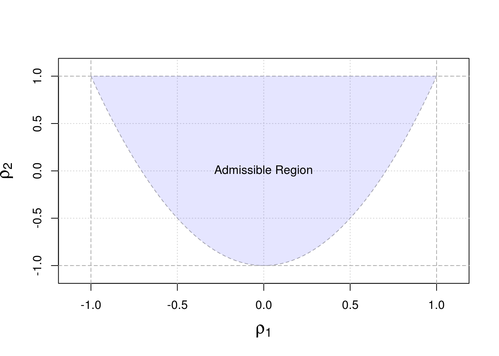
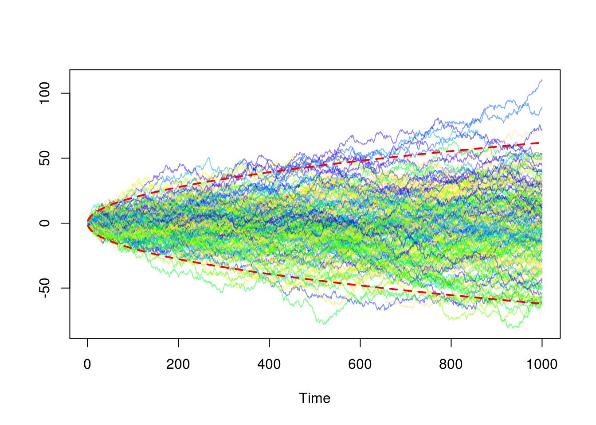

Chapter 2 Autocorrelation and Stationarity
“One of the first things taught in introductory statistics textbooks is that correlation is not causation. It is also one of the first things forgotten.”, Thomas Sowell
In this chapter we will discuss and formalize a little how knowledge about \(X_{t-1}\) (or \(\Omega_t\)) can provide us with some information about \(X_t\). In particular, we will consisder the correlation (or covariance) of \((X_t)\) at different times such as \(\corr \left(X_t, X_{t+h}\right)\). This “form” of correlation (covariance) is called the autocorrelation (autocovariance) and is a very usefull tool in time series analysis. Without assuming that a time series present form of “stability”, it would be rather difficult to estimate \(\corr \left(X_t, X_{t+h}\right)\) as this quantity would dependent on both \(t\) and \(h\) leading to far parameters to estimate than observations. Therefore, the concept of stationarity is conveniant in this context as it allow (among other things) to assume that
\[\corr \left(X_t, X_{t+h}\right) = \corr \left(X_t+j, X_{t+h+j}\right),\]
implying that the autocorrelation (or autocovariance) is only function of the lag between observation. This two concepts will be discuss in this chapter. Before moving on, it is helpful to remind that correlation (or autocorrelation) is only approriate to measure a very spefic kind on dependence, i.e. linear dependence. There are many forms of dependency as illustrated in the bottom panels on the graph below, which all have a (true) zero correlation:

dependency
Note that several other metrics have been introduced in the litterature to assess the degree of “dependence” of two random variables but this goes beyond the material discussed in this text.
2.1 The Autocorrelation and Autocovariance Functions
2.1.1 Definitions
The autocovariance function of a series \((X_t)\) is defined as
\[{\gamma_x}\left( {t,t+h} \right) = \operatorname{cov} \left( {{x_t},{x_{t+h}}} \right).\]
Since we generally consider stochastic processes with constant zero mean we often have
\[{\gamma_x}\left( {t,t+h} \right) = E\left[X_t X_{t+h} \right]. \]
We normally drop the subscript referring to the time series if it is clear to the time series the autocovariance function is referencing. For example, we generally use \({\gamma}\left( {t,t+h} \right)\) instead of \({\gamma_x}\left( {t,t+h} \right)\). Moreover, the notation is even further simplify when the covariance of \(X_t\) and \(X_{t+h}\) is the same as that of \(X_{t+j}\) and \(X_{t+h+j}\) (for \(j \in \mathbb{Z}\)), i.e. that the covariance depends only on the time between observations and not the absolute date \(t\). This is an important property call stationarity, which will be discuss in the next section. In this case, we simply use to following notation: \[\gamma \left( {h} \right) = \operatorname{cov} \left( X_t , X_{t+h} \right). \]
A few other remarks:
- The covariance function is symmetric. That is, \({\gamma}\left( {h} \right) = {\gamma}\left( -h \right)\) since \(\operatorname{cov} \left( {{X_t},{X_{t+h}}} \right) = \operatorname{cov} \left( X_{t+h},X_{t} \right)\).
- Note that \(\operatorname{var} \left( X_{t} \right) = {\gamma}\left( 0 \right)\).
- We have that \(|\gamma(h)| \leq \gamma(0)\) for all \(h\). The proof of this inequality follows from Cauchy-Schwarz inequality, i.e. \[ \begin{aligned} \left(|\gamma(h)| \right)^2 &= \gamma(h)^2 = \left(E\left[\left(X_t - E[X_t] \right)\left(X_{t+h} - E[X_{t+h}] \right)\right]\right)^2\\ &\leq E\left[\left(X_t - E[X_t] \right)^2 \right] E\left[\left(X_{t+h} - E[X_{t+h}] \right)^2 \right] = \gamma(0)^2. \end{aligned} \]
- Just as any covariance, the \({\gamma}\left( {h} \right)\) is “scale dependent”, \({\gamma}\left( {h} \right) \in \real\), or \(-\infty \le {\gamma}\left( {h} \right) \le +\infty\), so of course we have:
- if \(\left| {\gamma}\left( {h} \right) \right|\) is “close” to zero, then \(X_t\) and \(X_{t+h}\) are “weakly” (linearly) dependent,
- if \(\left| {\gamma}\left( {h} \right) \right|\) is “far” from zero, then the two random variable present a “strong” (linear) dependence, but this is generally difficult to asses what “close” and “far” from zero means in this case.
- \({\gamma}\left( {h} \right)=0\) does not imply \(X_t\) and \(X_{t+h}\) are independent. This is only true in joint Gaussian case.
An important related statistic is the correlation of \(X_t\) with \(X_{t+h}\) or autocorrelation which is defined as
\[\rho \left( h \right) = \operatorname{corr}\left( {{X_t},{X_{t + h}}} \right) = \frac{\gamma(h) }{\gamma(0)}.\]
Similarly to \(\gamma(h)\), it is important to note that the above notation implies that the autocorrelation function is only a function of the lag \(h\) between observations. Thus, autocovariances and autocorrelations are one possible way to describe the joint distribution of a time series. Indeed, the correlation of \(X_t\) with \(X_{t+1}\) is an obvious measure of how persistent a time series is.
Remeber that just as with any correlation:
- \(\rho \left( h \right)\) is scale free so it is much easier to interpret that than \(\gamma(h)\).
- \(|\rho \left( h \right)| \leq 1\) since \(|\gamma(h)| \leq \gamma(0)\).
- Causation and correlation are two very different things!
2.1.2 A Fundamental Representation
Autocovariances and autocorrelation also turn out to be a very useful tool because they are one of the fundamental representations of time series. Indeed, if we consider a zero mean normally distrbuted process it is clear that its joint distribution is fully characterized by the autocariances \(E[X_t X_{t+h}]\) (since the joint probability density only depends of these covariances). Once we know the autocovariances we know everything there is to know about the process and therefore: if two processes have the same autocovariance function, then they are the same process.
2.1.3 Admissible autocorrelation functions
Since the autocorrelation is related to a fundamental representation of time series it implies that one might be able to define a stochastic process by picking a set autocorrelation values. However, it turns out not every collection of numbers such as \(\{\rho_1, \rho_2, ...\}\) is the autocorrelation of a process. Two conditions are required to ensure the validity of an autocorrelation sequence:
- \(\operatorname{max}_j \; | \rho_j| \leq 1\).
- \(\operatorname{var} \left[\sum_{j = 0}^\infty \alpha_j X_{t-j} \right] \geq 0\) for all \(\{\alpha_0, \alpha_1, ...\}\).
The first condition is obvious and simply relects the fact that \(|\rho \left( h \right)| \leq 1\) but the second is more difficult to verify. Let \(\alpha_j = 0, \; j > 1\), then conditon 2 implies that
\[\operatorname{var} \left[ \alpha_0 X_{t} + \alpha_1 X_{t-1} \right] = \gamma_0 \begin{bmatrix} \alpha_0 & \alpha_1 \end{bmatrix} \begin{bmatrix} 1 & \rho_1\\ \rho_1 & 1 \end{bmatrix} \begin{bmatrix} \alpha_0 \\ \alpha_1 \end{bmatrix} \geq 0. \]
Thus, the matrix
\[ \boldsymbol{A}_1 = \begin{bmatrix} 1 & \rho_1\\ \rho_1 & 1 \end{bmatrix} \]
must be positive semi-definite. Therefore,
\[\operatorname{det} \left(\boldsymbol{A}_1\right) = 1 - \rho_1^2 \]
implying that \(|\rho_1| < 1\). Next, let \(\alpha_j = 0, \; j > 2\), then we must verify that:
\[\operatorname{var} \left[ \alpha_0 X_{t} + \alpha_1 X_{t-1} + \alpha_2 X_{t-2} \right] = \gamma_0 \begin{bmatrix} \alpha_0 & \alpha_1 &\alpha_2 \end{bmatrix} \begin{bmatrix} 1 & \rho_1 & \rho_2\\ \rho_1 & 1 & \rho_1 \\ \rho_2 & \rho_1 & 1 \end{bmatrix} \begin{bmatrix} \alpha_0 \\ \alpha_1 \\ \alpha_2 \end{bmatrix} \geq 0. \]
Similarly, this implies that the matrix
\[ \boldsymbol{A}_2 = \begin{bmatrix} 1 & \rho_1 & \rho_2\\ \rho_1 & 1 & \rho_1 \\ \rho_2 & \rho_1 & 1 \end{bmatrix} \]
must be positive semi-definite. It is easy to verify that
\[\operatorname{det} \left(\boldsymbol{A}_2\right) = \left(1 - \rho_2 \right)\left(- 2 \rho_1^2 + \rho_2 + 1\right). \]
It implies that \(|\rho_2| < 1\) as well as
\[\begin{aligned} &- 2 \rho_1^2 + \rho_2 + 1 \geq 0 \Rightarrow 1 > \rho_2 \geq 2 \rho_1^2 - 1 \\ &\Rightarrow 1 - \rho_1^2 > \rho_2 - \rho_1^2 \geq -(1 - \rho_1^2)\\ &\Rightarrow 1 > \frac{\rho_2 - \rho_1^2 }{1 - \rho_1^2} \geq -1, \end{aligned}\]
imlying that \(\rho_1\) and \(\rho_2\) must lie in a parabolic shaped region defined by the above inequalities as illustrated in the figure below:
plot(NA, xlim = c(-1.1,1.1), ylim = c(-1.1,1.1), xlab = expression(rho[1]),
ylab = expression(rho[2]), cex.lab = 1.5)
grid()
# Adding boundary of constraint |rho_1| < 1
abline(v = c(-1,1), lty = 2, col = "darkgrey")
# Adding boundary of constraint |rho_2| < 1
abline(h = c(-1,1), lty = 2, col = "darkgrey")
# Adding boundary of non-linear constraint
rho1 = seq(from = -1, to = 1, length.out = 10^3)
rho2 = (rho1^2 - 1) + rho1^2
lines(rho1, rho2, lty = 2, col = "darkgrey")
# Adding admissible region
polygon(c(rho1,rev(rho1)),c(rho2,rep(1,10^3)),
border = NA, col= rgb(0,0,1, alpha = 0.1))
# Adding text
text(0,0, c("Admissible Region"))
Therefore, the restrictions on the autocorrelation are very complicated providing a motivation for other form of fundamental representation, which will explore later in this text. Before moving on the estimation of the autocorrelation and covariance function we first discuss the stationarity of \((X_t)\), which will provide a conveninant framework in which \(\gamma(h)\) and \(\rho(h)\) can be used (rather that \(\gamma(t,t+h)\) for example).
2.2 Stationarity
2.2.1 Definitions
There are two kinds of stationarity which are commonly used. They are defined below:
- A process \((X_t)\) is strongly stationary or strictly stationary if the joint probability distribution of \(\{X_{t-h}, ..., X_t, ..., X_{t+h}\}\) is independent of \(t\) for all \(h\).
- A process \((X_t)\) is weakly stationary, covariance stationary or second order stationary if \(E[X_t]\), \(E[X_t^2]\) are finite and \(E[X_t X_{t-h}]\) depends only on \(h\) and not on \(t\).
These types of stationarity are not equivalent and the presence of one kind of stationarity does not imply the other. That is, a time series can be strongly stationary but not weakly stationary and vice versa. In some cases, a time series can be both strong and weakly stationary, this is happends for example in the (joint) Gaussian case. Stationarity of \((X_t)\) matters, because it provides the framework in which averaging dependent data makes sense allows to easily estimate quantities such as the autocorrelation function.
A few remarks:
- Strong stationarity does not imply weak stationarity. Example: an iid Cauchy process is strongly but not weakly stationary.
- Weak stationarity does not imply strong stationarity. Example: Consider the following weak white noise process: \(X_{2t} = U_{2t}, X_{2t+1} = V_{2t+1}\), for \(t = 1,..., n\) where \({U_t}\mathop \sim \limits^{iid} N\left( {1,1} \right)\) and \({V_t}\mathop \sim \limits^{iid} Exponential\left( 1 \right)\) is weakly stationary but not strongly stationary.
- Strong stationarity combined with bounded values of \(E[X_t]\) and \(E[X_t^2]\) implies weak stationarity
- Weak stationarity combined with normalityof the process implies strong stationarity.
2.2.2 Assessing Weak Stationarity of Time Series Models
It is important to understand how to verify if a postulated model is (waekly) stationary. In order to do so, we must ensure that the model satisfies three properties, i.e.
- \(E\left[X_t \right] = \mu_t = \mu < \infty\),
- \(\operatorname{var}\left[X_t \right] = \sigma^2_t = \sigma^2 < \infty\),
- \(\operatorname{cov}\left(X_t, X_{t+h} \right) = \gamma \left(h\right)\).
In the following examples we evaluate the stationarity of the processes introduced in Section 1.3.
Example: Gaussian White Noise It is easy to verify that a this process is stationary. Indeed, we have:
- \(E\left[ {{X_t}} \right] = 0\),
- \(\gamma(0) = \sigma^2 < \infty\),
- \(\gamma(h) = 0\) for \(|h| > 0\).
Example: Random Walk To evaluate the stationarity of this process we first derive its properties:
- \[\begin{aligned} E\left[ {{X_t}} \right] &= E\left[ {{X_{t - 1}} + {W_t}} \right] = E\left[ {\sum\limits_{i = 1}^t {{W_t}} + {X_0}} \right] \\ &= E\left[ {\sum\limits_{i = 1}^t {{W_t}} } \right] + {c} = c \\ \end{aligned} \] Note that the mean here is constant since it depends only on the value of the first term in the sequence.
\[\begin{aligned} \operatorname{var}\left( {{X_t}} \right) &= \operatorname{var}\left( {\sum\limits_{i = 1}^t {{W_t}} + {X_0}} \right) = \operatorname{var}\left( {\sum\limits_{i = 1}^t {{w_t}} } \right) + \underbrace {\operatorname{var}\left( {{X_0}} \right)}_{= 0} \\ &= \sum\limits_{i = 1}^t {Var\left( {{w_t}} \right)} = t \sigma_w^2. \end{aligned}\] where \(\sigma_w^2 = \operatorname{var}(W_t)\). Therefore, the variance has a dependence on time contradicting our second property. Moreover, we have: \[\mathop {\lim }\limits_{t \to \infty } \; \operatorname{var}\left(X_t\right) = \infty.\] This process is therefore not weakly stationary.
Rgearding the autovariance of a random walk we have: \[\begin{aligned} \gamma \left( h \right) &= Cov\left( {{X_t},{X_{t + h}}} \right) = Cov\left( {\sum\limits_{i = 1}^t {{W_i}} ,\sum\limits_{j = 1}^{t + h} {{W_j}} } \right) \\ &= Cov\left( {\sum\limits_{i = 1}^t {{W_i}} ,\sum\limits_{j = 1}^t {{W_j}} } \right) = \min \left( {t,t + h} \right)\sigma _w^2 \\ &= \left( {t + \min \left( {0,h} \right)} \right)\sigma _w^2, \end{aligned} \]
which further illustrates that non-stationarity of this process.
Moreover, the autocorrelation of this process is given by
\[\rho (h) = \frac{t + \min \left( {0,h} \right)}{\sqrt{t}\sqrt{t+h}},\]
implying (for a fixed \(h\)) that
\[\mathop {\lim }\limits_{t \to \infty } \; \rho(h) = 1.\]
In the following simulated example, we illustrate the non-stationary feature of such process:
# In this example, we simulate a large number of random walks
# Number of simulated processes
B = 200
# Length of random walks
n = 1000
# Output matrix
out = matrix(NA,B,n)
for (i in 1:B){
# Simulate random walk
Xt = cumsum(rnorm(n))
# Store process
out[i,] = Xt
}
# Plot random walks
plot(NA, xlim = c(1,n), ylim = range(out), xlab = "Time", ylab = " ")
color = sample(topo.colors(B, alpha = 0.5))
for (i in 1:B){
lines(out[i,], col = color[i])
}
# Add 95% confidence region
lines(1:n, 1.96*sqrt(1:n), col = 2, lwd = 2, lty = 2)
lines(1:n, -1.96*sqrt(1:n), col = 2, lwd = 2, lty = 2)
The relationship between time and variance can clearly be observed in the above graph.
Example: MA(1) Similarly to our previous examples, we attempt to verify the stationary properties for the MA(1) model defined in \ref{eq:defMA1} REF NOT WORKING:
- \[ E\left[ {{X_t}} \right] = E\left[ {{\theta_1}{W_{t - 1}} + {W_t}} \right] = {\theta_1}E\left[ {{W_{t - 1}}} \right] + E\left[ {{W_t}} \right] = 0. \]
- \[\var \left( {{X_t}} \right) = \theta_1^2 \var \left( W_{t - 1}\right) + \var \left( W_{t}\right) = \left(1 + \theta^2 \right) \sigma^2_w.\]
- \[\begin{aligned} Cov\left( {{X_t},{X_{t + h}}} \right) &= E\left[ {\left( {{X_t} - E\left[ {{X_t}} \right]} \right)\left( {{X_{t + h}} - E\left[ {{X_{t + h}}} \right]} \right)} \right] = E\left[ {{X_t}{X_{t + h}}} \right] \\ &= E\left[ {\left( {{\theta}{W_{t - 1}} + {W_t}} \right)\left( {{\theta }{W_{t + h - 1}} + {W_{t + h}}} \right)} \right] \\ &= E\left[ {\theta^2{W_{t - 1}}{W_{t + h - 1}} + \theta {W_t}{W_{t + h}} + {\theta}{W_{t - 1}}{W_{t + h}} + {W_t}{W_{t + h}}} \right]. \\ \end{aligned} \]
It is easy to see that \(E\left[ {{W_t}{W_{t + h}}} \right] = {\boldsymbol{1}_{\left\{ {h = 0} \right\}}}\sigma _w^2\) and therefore, we obtain
\[\cov \left( {{X_t},{X_{t + h}}} \right) = \left( {\theta^2{ \boldsymbol{1}_{\left\{ {h = 0} \right\}}} + {\theta}{\boldsymbol{1}_{\left\{ {h = 1} \right\}}} + {\theta}{\boldsymbol{1}_{\left\{ {h = - 1} \right\}}} + {\boldsymbol{1}_{\left\{ {h = 0} \right\}}}} \right)\sigma _w^2\]
implying the following autocovariance function:
\[\gamma \left( h \right) = \left\{ {\begin{array}{*{20}{c}} {\left( {\theta^2 + 1} \right)\sigma _w^2}&{h = 0} \\ {{\theta}\sigma _w^2}&{\left| h \right| = 1} \\ 0&{\left| h \right| > 1} \end{array}} \right. .\]
Therefore, an MA(1) process is weakly stationary since both the mean and variance are constant over time and its covariance function is only a function of the lag \(h\). Finally, we can easily obtain the autocorrelation for this process, which is given by
\[\Rightarrow \rho \left( h \right) = \left\{ {\begin{array}{*{20}{c}} 1&{h = 0} \\ {\frac{{{\theta}\sigma _w^2}}{{\left( {\theta^2 + 1} \right)\sigma _w^2}} = \frac{{{\theta}}}{{\theta^2 + 1}}}&{\left| h \right| = 1} \\ 0&{\left| h \right| > 1} \end{array}} \right.\]
Interestingly, we can note that \(|\rho(1)| \leq 0.5\).
Example AR(1)
JAMES TO DO - USE MA(1) AS EXAMPLE, ADD DETAILS FROM HOMEWORK, CHANGE \(\phi_1\) in \(\phi\) and add ref to chap 1. Thanks
Consider the AR(1) process given as: \[{y_t} = {\phi _1}{y_{t - 1}} + {w_t} \text{, where } {w_t}\mathop \sim \limits^{iid} WN\left( {0,\sigma _w^2} \right)\]
This process was shown to simplify to:
\[y_t = {\phi ^t}{y_0} + \sum\limits_{i = 0}^{t - 1} {\phi _1^i{w_{t - i}}}\]
In addition, we add the requirement that \(\left| \phi _1 \right| < 1\). This requirement allows for the process to be stationary. If \(\phi _1 \ge 1\), the process would not converge. This way the process will be able to be written as a geometric series that converges: \[\sum\limits_{k = 0}^\infty {{r^k}} = \frac{1}{{1 - r}},{\text{ }}\left| r \right| < 1\]
Next, we demonstrate how crucial this property is:
\[\begin{aligned} \mathop {\lim }\limits_{t \to \infty } E\left[ {{y_t}} \right] &= \mathop {\lim }\limits_{t \to \infty } E\left[ {{\phi ^t}{y_0} + \sum\limits_{i = 0}^{t - 1} {\phi _1^i{w_{t - i}}} } \right] \\ &= \mathop {\lim }\limits_{t \to \infty } \underbrace {{\phi ^t}{y_0}}_{\left| \phi \right| < 1 \Rightarrow t \to \infty {\text{ = 0}}} + \sum\limits_{i = 0}^{t - 1} {\phi _1^i\underbrace {E\left[ {{w_{t - i}}} \right]}_{ = 0}} \\ &= 0 \\ \mathop {\lim }\limits_{t \to \infty } Var\left( {{y_t}} \right) &= \mathop {\lim }\limits_{t \to \infty } Var\left( {{\phi ^t}{y_0} + \sum\limits_{i = 0}^{t - 1} {\phi _1^i{w_{t - i}}} } \right) \\ &= \mathop {\lim }\limits_{t \to \infty } \underbrace {Var\left( {{\phi ^t}{y_0}} \right)}_{ = 0{\text{ since constant}}} + Var\left( {\sum\limits_{i = 0}^{t - 1} {\phi _1^i{w_{t - i}}} } \right) \\ &= \mathop {\lim }\limits_{t \to \infty } \sum\limits_{i = 0}^{t - 1} {\phi _1^{2i}Var\left( {{w_{t - i}}} \right)} \\ &= \mathop {\lim }\limits_{t \to \infty } \sigma _w^2\sum\limits_{i = 0}^{t - 1} {\phi _1^{2i}} \\ &= \sigma _w^2 \cdot \underbrace {\frac{1}{{1 - {\phi ^2}}}}_{\begin{subarray}{l} {\text{Geometric Series}} \end{subarray}} \end{aligned} \]
This leads us to being able to conclude the autocovariance function is: \[\begin{aligned} Cov\left( {{y_t},{y_{t + h}}} \right) &= Cov\left( {{y_t},\phi {y_{t + h - 1}} + {w_{t + h}}} \right) \\ &= Cov\left( {{y_t},\phi {y_{t + h - 1}}} \right) \\ &= Cov\left( {{y_t},{\phi ^{\left| h \right|}}{y_t}} \right) \\ &= {\phi ^{\left| h \right|}}Cov\left( {{y_t},{y_t}} \right) \\ &= {\phi ^{\left| h \right|}}Var\left( {{y_t}} \right) \\ &= {\phi ^{\left| h \right|}}\frac{{\sigma _w^2}}{{1 - \phi _1^2}} \\ \end{aligned} \]
Both the mean and autocovariance function do not depend on time and, thus, the AR(1) process is stationary if \(\left| \phi _1 \right| < 1\).
If we assume that the AR(1) process is stationary, we can derive the mean and variance in another way. Without a loss of generality, we’ll assume \(y_0 = 0\).
Therefore:
\[\begin{aligned} {y_t} &= {\phi _t}{y_{t - 1}} + {w_t} \\ &= {\phi _1}\left( {{\phi _1}{y_{t - 2}} + {w_{t - 1}}} \right) + {w_t} \\ &= \phi _1^2{y_{t - 2}} + {\phi _1}{w_{t - 1}} + {w_t} \\ &\vdots \\ &= \sum\limits_{i = 0}^{t - 1} {\phi _1^i{w_{t - i}}} \\ & \\ E\left[ {{y_t}} \right] &= E\left[ {\sum\limits_{i = 0}^{t - 1} {\phi _1^i{w_{t - i}}} } \right] \\ &= \sum\limits_{i = 0}^{t - 1} {\phi _1^i\underbrace {E\left[ {{w_{t - i}}} \right]}_{ = 0}} \\ &= 0 \\ &\\ Var\left( {{y_t}} \right) &= E\left[ {{{\left( {{y_t} - E\left[ {{y_t}} \right]} \right)}^2}} \right] \\ &= E\left[ {y_t^2} \right] - {\left( {E\left[ {{y_t}} \right]} \right)^2} \\ &= E\left[ {y_t^2} \right] \\ &= E\left[ {{{\left( {{\phi _1}{y_{t - 1}} + {w_t}} \right)}^2}} \right] \\ &= E\left[ {\phi _1^2y_{t - 1}^2 + w_t^2 + 2{\phi _1}{y_t}{w_t}} \right] \\ &= \phi _1^2E\left[ {y_{t - 1}^2} \right] + \underbrace {E\left[ {w_t^2} \right]}_{ = \sigma _w^2} + 2{\phi _1}\underbrace {E\left[ {{y_t}} \right]}_{ = 0}\underbrace {E\left[ {{w_t}} \right]}_{ = 0} \\ &= \underbrace {\phi _1^2Var\left( {{y_{t - 1}}} \right) + \sigma _w^2 = \phi _1^2Var\left( {{y_t}} \right) + \sigma _w^2}_{{\text{Assume stationarity}}} \\ Var\left( {{y_t}} \right) &= \phi _1^2Var\left( {{y_t}} \right) + \sigma _w^2 \\ Var\left( {{y_t}} \right) - \phi _1^2Var\left( {{y_t}} \right) &= \sigma _w^2 \\ Var\left( {{y_t}} \right)\left( {1 - \phi _1^2} \right) &= \sigma _w^2 \\ Var\left( {{y_t}} \right) &= \frac{{\sigma _w^2}}{{1 - \phi _1^2}} \\ \end{aligned} \]
2.3 Estimation of the Mean Function
If a time series is stationary, the mean function is constant and a possible estimator of this quantity is given by
\[\bar{X} = {\frac{1}{n}\sum\limits_{t = 1}^n {{X_t}} }.\]
This estimator is clearly unbiased and has the following variance:
\[\begin{aligned} \var \left( {\bar X} \right) &= \operatorname{var} \left( {\frac{1}{n}\sum\limits_{t = 1}^n {{X_t}} } \right) \\ &= \frac{1}{{{n^2}}}\operatorname{var} \left( {{{\left[ {\begin{array}{*{20}{c}} 1& \cdots &1 \end{array}} \right]}_{1 \times n}}{{\left[ {\begin{array}{*{20}{c}} {{X_1}} \\ \vdots \\ {{X_n}} \end{array}} \right]}_{n \times 1}}} \right) \\ &= \frac{1}{{{n^2}}}{\left[ {\begin{array}{*{20}{c}} 1& \cdots &1 \end{array}} \right]_{1 \times n}}\left[ {\begin{array}{*{20}{c}} {\gamma \left( 0 \right)}&{\gamma \left( 1 \right)}& \cdots &{\gamma \left( {n - 1} \right)} \\ {\gamma \left( 1 \right)}&{\gamma \left( 0 \right)}&{}& \vdots \\ \vdots &{}& \ddots & \vdots \\ {\gamma \left( {n - 1} \right)}& \cdots & \cdots &{\gamma \left( 0 \right)} \end{array}} \right]{\left[ {\begin{array}{*{20}{c}} 1 \\ \vdots \\ 1 \end{array}} \right]_{n \times 1}} \\ &= \frac{1}{{{n^2}}}\left( {n\gamma \left( 0 \right) + 2\left( {n - 1} \right)\gamma \left( 1 \right) + 2\left( {n - 2} \right)\gamma \left( 2 \right) + \cdots + 2\gamma \left( {n - 1} \right)} \right) \\ &= \frac{1}{n}\sum\limits_{h = - n}^n {\left( {1 - \frac{{\left| h \right|}}{n}} \right)\gamma \left( h \right)} \\ \end{aligned}. \]
In the white noise case, the above formula reduces to the usual \(\operatorname{var} \left( {\bar X} \right) = \operatorname{var}(X_t)/n\).
Example: For an AR(1) we have \(\gamma(h) = \phi^h \sigma_w^2 \left(1 - \phi^2\right)^2\), therefore, we obtain (after a bit of algebra):
\[ \var \left( {\bar X} \right) = \frac{\sigma_w^2 \left( n - 2\phi - n \phi^2 + 2 \phi^{n + 1}\right)}{n^2\left(1-\phi^2\right)\left(1-\phi\right)^2}.\]
Unfortunately, deriving such an exact formula is often difficult when considering more complexe models, however, asymptotic approximations are often employed simply the calculation. For example, in our case we have
\[\mathop {\lim }\limits_{n \to \infty } \; n \var \left( {\bar X} \right) = \frac{\sigma_w^2}{\left(1-\phi\right)^2},\]
providing the following approximate formula:
\[\var \left( {\bar X} \right) \approx \frac{\sigma_w^2}{n \left(1-\phi\right)^2}.\]
Alternatively, simulation methods can also employed. The figure compares these three methods:
# Define sample size
n = 10
# Number of Monte-Carlo replications
B = 5000
# Define grid of values for phi
phi = seq(from = 0.95, to = -0.95, length.out = 30)
# Define result matrix
result = matrix(NA,B,length(phi))
# Start simulation
for (i in 1:length(phi)){
# Define model
model = AR1(phi = phi[i], sigma2 = 1)
# Monte-Carlo
for (j in 1:B){
# Simulate AR(1)
Xt = gen.gts(model, N = n)
# Estimate Xbar
result[j,i] = mean(Xt)
}
}
# Estimate variance of Xbar
var.Xbar = apply(result,2,var)
# Compute theoretical variance
var.theo = (n - 2*phi - n*phi^2 + 2*phi^(n+1))/(n^2*(1-phi^2)*(1-phi)^2)
# Compute (approximate) vairance
var.approx = 1/(n*(1-phi)^2)
# Compare variance estimations
plot(NA, xlim = c(-1,1), ylim = range(var.approx), log = "y",
ylab = expression(paste("var(", bar(X), ")")),
xlab= expression(phi), cex.lab = 1.5)
grid()
lines(phi,var.theo, col = "deepskyblue4")
lines(phi, var.Xbar, col = "firebrick3")
lines(phi,var.approx, col = "springgreen4")
legend("topleft",c("Theoretical variance","Estimated variance","Approximate variance"),
col = c("deepskyblue4","firebrick3","springgreen4"), lty = 1,
bty = "n",bg = "white", box.col = "white", cex = 1.2)
2.4 Sample Autocovariance and Autocorrelation Functions
A natural estimator of the autocovariance function is given as:
\[\hat \gamma \left( h \right) = \frac{1}{T}\sum\limits_{t = 1}^{T - h} {\left( {{X_t} - \bar X} \right)\left( {{X_{t + h}} - \bar X} \right)} \]
leading the following “plug-in” estimator of the autocorrelation function
\[\hat \rho \left( h \right) = \frac{{\hat \gamma \left( h \right)}}{{\hat \gamma \left( 0 \right)}}.\]
A graphical representation of the autocorrelation function is often the first step of any time series analysis (assuming the process to be stationary). Consider the following simulated example:
# Load package
library(gmwm)
# Simulate 100 observation from a Gaussian white noise
Xt = gen.gts(WN(sigma2 = 1), N = 100)
# Compute autocorrelation
acf_Xt = ACF(Xt)
# Plot autocorrelation
plot(acf_Xt, show.ci = FALSE)
In this example, the true autocorrelation is equal to zero at any lag \(h \neq 0\) but obviously the estimated autocorrelations are random variables and are not equal to their true values. It would therefore be usefull to have some knowledge about the variability of the sample autocorrelations (under some conditions) to assess whether the data comes from a completely random series or presents some significant correlation at some lags. The following result provide an asymptotic solution to this problem:
Theorem: If \(X_t\) is white noise with finite fourth moment, then \(\hat{\rho}(h)\) is approximately normally distributed with mean \(0\) and variance \(n^{-1}\) for all fixed \(h\).
Using on this result, we now have an approximate method to assess whether peaks in sample autocorrelation are significant by determining whether the observed peak lies outside the interval \(\pm 2/\sqrt{T}\) (i.e. an approximate 95% confidence interval). Returning to our previous example:
# Plot autocorrelation with confidence bands
plot(acf_Xt)
It can now be observed that most peaks lies within the interval \(\pm 2/\sqrt{T}\) suggesting that the true data generating process is completely random (in the linear sense).
Unfortunately, this method is asymptotic (it relies on the central limit theorem) and there no “exact” tools that can be used in this case. In the simulation study below consider the “quality” of this result for \(h = 3\) considering different sample sizes:
# Number of Monte Carlo replications
B = 10000
# Define considered lag
h = 3
# Sample size considered
T = c(5,10,30,300)
# Initialisation
result = matrix(NA,B,length(T))
# Set seed
set.seed(1)
# Start Monte Carlo
for (i in 1:B){
for (j in 1:length(T)){
# Simluate process
Xt = rnorm(T[j])
# Save autocorrelation at lag h
result[i,j] = acf(Xt, plot = FALSE)$acf[h+1]
}
}
# Plot results
par(mfrow = c(1,length(T)))
for (i in 1:length(T)){
# Estimated empirical distribution
hist(result[,i], col = "lightgrey", main = paste("Sample size T =",T[i]), probability = TRUE, xlim = c(-1,1), xlab = " ")
# Asymptotic distribution
xx = seq(from = -10, to = 10, length.out = 10^3)
yy = dnorm(xx,0,1/sqrt(T[i]))
lines(xx,yy, col = "red")
}
It can clearly be observed that asymptotic approximation is quite poor when \(T = 5\) but as the sample size increases the approximation becomes more appropriate and is nearly perfect with \(T = 300\).
2.5 Robustness Issues
# Define sample size
n = 100
# Define proportion of "extreme" observation
alpha = 0.05
# Extreme observation are generated from N(0,sigma2.cont)
sigma2.cont = 10
# Number of Monte-Carlo replications
B = 1000
# Define model AR(1)
phi = 0.5
sigma2 = 1
model = AR1(phi = phi, sigma2 = sigma2)
# Initialization of result array
result = array(NA, c(B,2,20))
# Start Monte-Carlo
for (i in 1:B){
# Simulate AR(1)
Xt = gen.gts(model, N = n)
# Create a copy of Xt
Yt = Xt
# Add a proportion alpha of extreme observations to Yt
Yt[sample(1:n,round(alpha*n))] = rnorm(round(alpha*n), 0, sigma2.cont)
# Compute ACF of Xt and Yt
acf_Xt = ACF(Xt)
acf_Yt = ACF(Yt)
# Store ACFs
result[i,1,] = acf_Xt[1:20]
result[i,2,] = acf_Yt[1:20]
}
# Compare empirical distribution of ACF based on Xt and Yt
# Vector of lags considered (h <= 20)
lags = c(1,2,5,10) + 1
# Make graph
par(mfrow = c(2,2))
for (i in 1:4){
boxplot(result[,1,lags[i]], result[,2,lags[i]], col = "lightgrey",
names = c("Uncont.","Cont."), main = paste("lag: h = ", lags[i]-1),
ylab = "Sample autocorrelation")
abline(h = phi^(lags[i]-1), col = 2, lwd = 2)
}